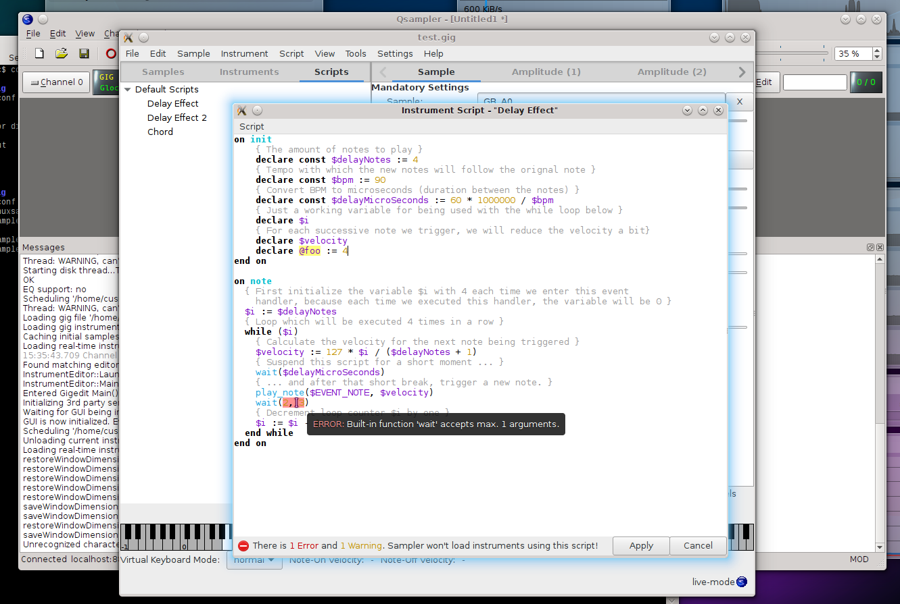

There is some progress regarding the NKSP instrument script editor. With LinuxSampler 2.0.0.svn8 and gigedit 1.0.0.svn13 working on instrument scripts for sounds became much more convenient. Gigedit's integrated instrument script editor starts to become an IDE for instrument script development.
Gigedit's integrated instrument script editor supports now tight coupling directly with LinuxSampler's actual instrument script parser backend. That provides several improvements for the script editor. For example colored syntax highlighting of scripts is now displayed appropriately and simply looks much better now. Previously there was some small hard coded script parser code on Gigedit's side which however was buggy and simply did no great job.
Another major improvement possible due to the direct coupling with LinuxSampler's script backend, is support for showing all issues related to the script (errors and warnings) directly within the script editor in real-time while you are typing. The actual erroneous locations of the script are automatically highlighted with red background color, locations of the script with warnings are automatically highlighted with yellow background color, and when you move your mouse over the respective code location, the precise error/warning message is displayed as a tooltip. And last but not least there is a summary of issues displayed in the status bar of the script editor. Since LinuxSampler's instrument script backend is actually doing all the work for the script editor, all aspects of the language, all details about built-in functions and variables, and all potential issues with their precise cause and messages are automatically covered by the script editor. That way you immediately know whether or whether not your script is OK with every character you are typing, and without requiring to actually load the script with an instrument into the sampler.
Previously, when you made any changes to scripts, you had to manually tell the sampler to reload the respective instrument to actually being able to try out your changes and play it with some sound. This is not needed anymore. You can now simply open the respective script of the sound you are currently playing with, change the script with Gigedit's integrated script editor and click either on the "Apply" button or use the Ctrl-S keyboard shortcut. The sampler will immediately reload the script and the new version of your script will immediately become audible with the sampler. That makes working on scripts much faster and convenient.